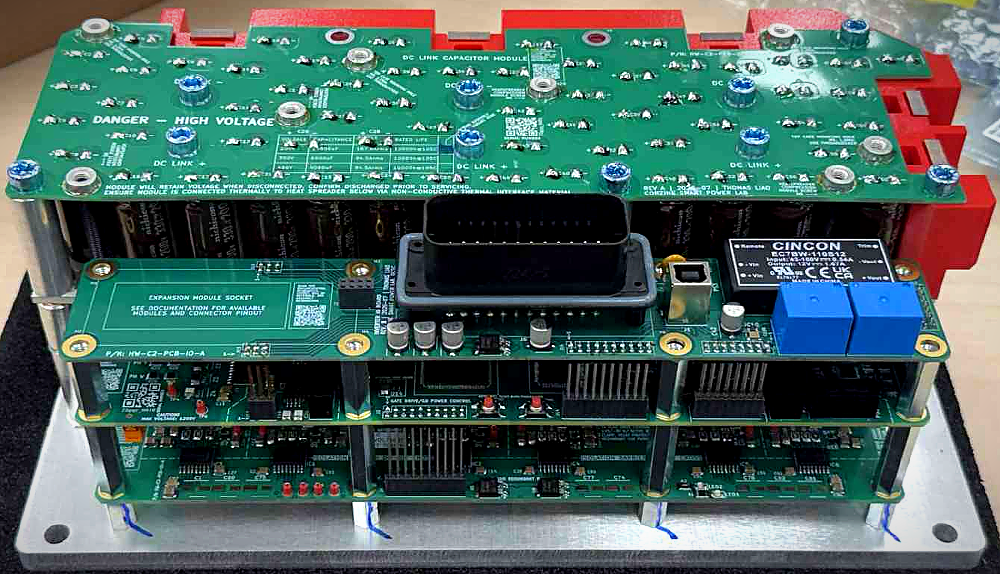
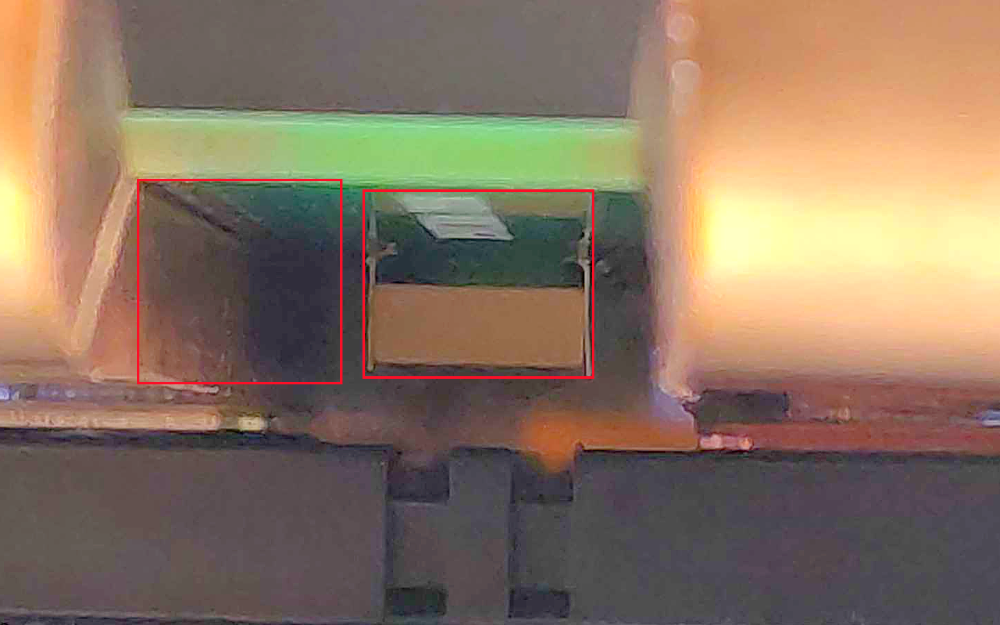
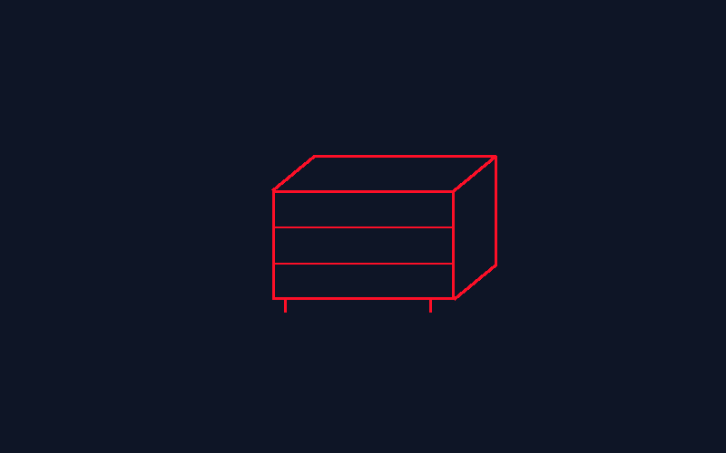
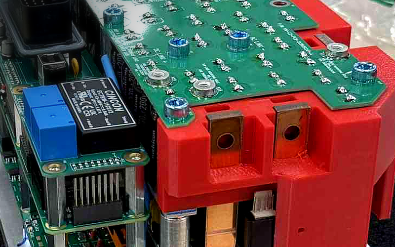
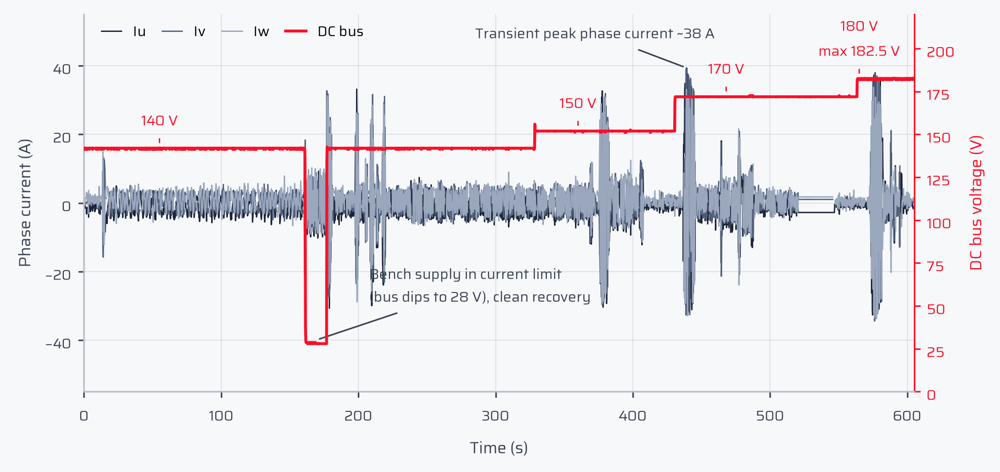
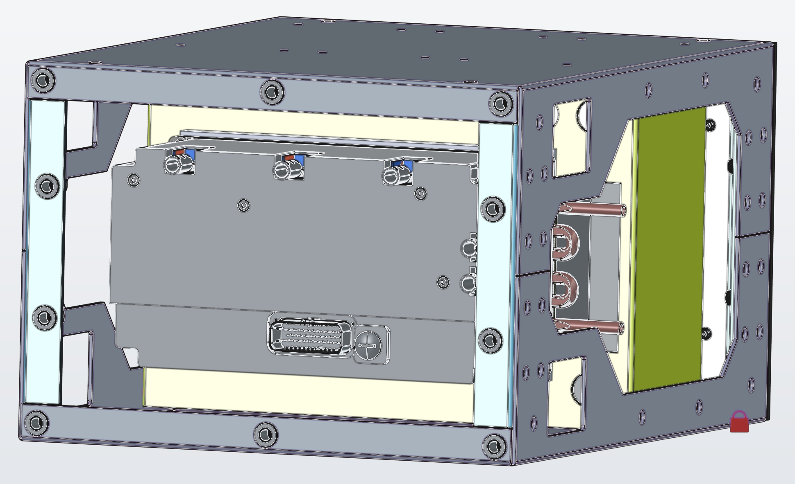
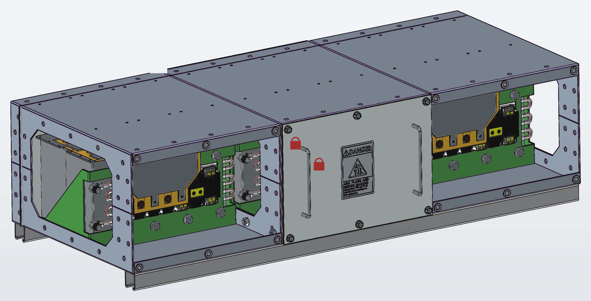

The open, safety-engineered power-conversion platform
Developed in the Smart Power Lab at UC Santa Cruz, OpenVVVF is built on a bench-tested dual-MCU control architecture. A reusable control module connects to swappable power stages from approximately 50 kW to the megawatt class for motor drives and DC/DC conversion, with SiC-ready designs and a common software workflow.

1
2
3
4
Fig. 1: The Size 2 stack, top to bottom: capacitor board, I/O board, control board, and gate-drive board.
1
DC-link capacitor board
Electrolytic, film, and ceramic capacitors form a compact DC link. MLCCs mounted directly between the IGBT terminals shorten the commutation loop, limit switching overshoot, and support a future transition to SiC.
2
I/O board
USB-B, dual CAN FD, and an expansion socket for application I/O.
3
Control board, dual-MCU
The main MCU runs FOC motor control. An independent safety coprocessor monitors critical signals and can bring the system to a safe state.
4
Gate-drive board
Isolated gate drive and sensing for the three IGBT half-bridges.
Cooling
Three IGBT half-bridge modules are conduction-cooled through an aluminum baseplate, with no liquid-cooling loop. The same chassis also provides a path to future motorcycle testing.
Software and open workflow
The same control core is intended to run across power stages. It supports self-commissioning for PMSM and induction machines, the open-source RTE Studio model-based workflow, and the browser-based Telemetry Viewer. Schematics, firmware, safety analyses, assembly data, and test evidence are public at docs.openvvvf.org.

Fig. 2: Ceramic capacitors between the IGBT terminals. The commutation loop measures only a few millimeters.
Modular power architecture
Reusable control, scalable power stages
Control moduleDual-MCU control · FOC · independent safety
Power stageGate-driver boards · capacitor boards · IGBT or SiC modules

Size 1
Approximately 50 kW class for light EVs and scalable designs
Early design

Size 2 inverter
200–450 V class · 465 A continuous design rating
Implemented, under test
Size 2 DC/DC
15 kW · 450 V class · reuses Size 2 boards and power stage
Released design
Size 3
Up to 1,200 V · 1,400 A · modular liquid-cooled enclosure
In development
Evidence
Bench-tested, on the record
200–450 VSize 2 DC-bus class by capacitor selection
465 AContinuous design rating · 600 A peak (60 s)
10Published test reports, raw telemetry linked
PMSM + inductionInstrument-verified motor self-commissioning

Fig. 3: The 180 V bring-up stepped the bus through 140, 150, 170, and 180 V. Maximum bus voltage was 182.5 V.
Live telemetry, not promises
The Size 2 chassis drove a 10 HP induction motor, reached approximately 38 A peak phase current, and recovered cleanly from a bench-supply current-limit event. All ten published reports link raw logs for the browser-based Telemetry Viewer.
Scan to open the 180 V bring-up and interactive telemetry.
Test campaign
Setup
Key result
180 V power-stage bring-up
TECO 10 HP induction motor; bus stepped from 140 to 180 V
200 V-class operation confirmed; ≈38 A peak; clean fault recovery
One-hour no-load endurance
Size 2 + induction motor; 120 V DC; ≈60 Hz
60 minutes of continuous operation; zero faults; thermal baseline established
20-minute reversal stress at 180 V
±60 Hz every ≈45 s; passive cooling
26 reversals; zero faults; ≈41 A maximum
Self-commissioning accuracy
Inverter estimates versus LCR meter; PMSM + induction
Resistance error from −6.5 to +7.3 %; inductance error of +2.4 %
Six additional instrumented calibration reports support these results. All ten reports include raw telemetry and are revised publicly as validation continues.
Safety engineering
Six independent paths to the safe state
The control module is dual-MCU by design. The main MCU (STM32H723ZG) runs FOC motor control, plausibility checks, and fault handling. The safety coprocessor (STM32G474RCTx) independently monitors every safety-critical signal, cross-checks both CAN buses, and runs a challenge-response watchdog. Either processor can force the safe state.
Hardware PWM break (TIM1)<100 ns
Shared driver RESET<1 µs
1oo2 (one-out-of-two) gate-drive power kill~10 µs
Independent coprocessor kill<10 µs
Watchdog-forced main-MCU reset~100 ms
Passive 3.3 V rail-loss pull-downpassive, no software
Highest-goal safety design target: the architecture applies ASIL B(D) decomposition, using two independent ASIL B channels to address an ASIL D goal. ISO 26262 methodology is a design input, not a certification claim. The functional-safety roadmap includes fault-injection, thermal, and vibration campaigns.
17hazards identified
14safety goals
22functional safety requirements
92fault-injection tests planned
ISO 26262 + IEC 61800-5-2safe-function mapping
Safety engineered from the silicon to the sheet metal.
Smart Power Lab at UC Santa Cruz
Help move OpenVVVF forward
OpenVVVF is developed in the Smart Power Lab at UC Santa Cruz. The lab publishes hardware, firmware, safety engineering, assembly data, and test evidence openly so others can study, build, and extend the platform.

Size 2 DC/DC module: Released design rendering. The 15 kW converter reuses the Size 2 PCBs and power stage; orderable BOMs are available.

Size 3 high-power enclosure: Design rendering. The up-to-1,200 V, 1,400 A concept uses modular liquid-cooled bays; arc-flash containment analysis is in progress.
Next engineering workGen 7.1 hardware · loaded testing · modular DC/DC conversion · reusable gate-driver and capacitor boards
Ways to help
Preferred for ongoing development
Research gift
For supporters who want the lab to keep developing OpenVVVF without a sponsor-defined statement of work. A gift through UC Santa Cruz can support student research time, components, fabrication, instruments, and testing where the team needs them most. The lab can confirm the correct designation.
A defined project
Sponsored research
Funds a specific piece of work with an agreed scope, budget, schedule, and deliverables.
Equipment or services
In-kind support
Power modules, components, fabrication, instruments, equipment loans, dynamometer time, or other test access.
Not sure which fits? Start with the Smart Power Lab contacts below. The lab can confirm the right gift designation or bring in the appropriate UC Santa Cruz contact for sponsored research or equipment.
Support the Smart Power Lab
Smart Power Lab contacts
Lab contacts: Keith Corzine, Keith@corzine.net / corzine@ucsc.edu; Leila Parsa, lparsa@ucsc.edu. University coordination: be-dev@ucsc.edu.